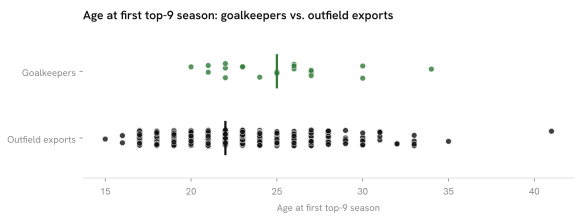

Summary · Question 11 of 14
Spanish goalkeepers in the top-9 leagues per million and their age at the first top-9 season, 2025/26
20 Spanish goalkeepers played ≥ 450 minutes in the top-9 leagues, 0.41 per million (rank 4 of 8), and their median age at the first top-9 season was 25 (n = 20) against 22 for outfield exports (n = 435).

Club tier: Spanish top-9 goalkeepers, 2025/26
| Player | Club | League | Minutes | Club goals percentile |
|---|---|---|---|---|
| David Soria | Getafe | ESP-La Liga | 3420 | 10 % |
| Antonio Sivera | Alavés | ESP-La Liga | 3420 | 23 % |
| David Raya | Arsenal | ENG-Premier League | 3330 | 95 % |
| David de Gea | Fiorentina | ITA-Serie A | 3330 | 38 % |
| Álex Remiro | Real Sociedad | ESP-La Liga | 3330 | 75 % |
| Unai Simón | Athletic Club | ESP-La Liga | 3330 | 35 % |
| Sergio Herrera | Osasuna | ESP-La Liga | 3284 | 35 % |
| Aarón Escandell | Oviedo | ESP-La Liga | 3240 | 5 % |
| Robert Sánchez | Chelsea | ENG-Premier League | 3039 | 78 % |
| Leo Román | Mallorca | ESP-La Liga | 2970 | 60 % |
| Nacho Miras | Mechelen | BEL-Pro League | 2925 | 38 % |
| Joel Robles | Estoril | POR-Primeira Liga | 2790 | 78 % |
| Joan Garcia | Barcelona | ESP-La Liga | 2700 | 100 % |
| Álvaro Vallés | Real Betis | ESP-La Liga | 2520 | 82 % |
| Julián Cuesta | Antalyaspor | TUR-Süper Lig | 1800 | 31 % |
| Julen Agirrezabala | Valencia | ESP-La Liga | 1620 | 50 % |
| Iñaki Peña | Elche | ESP-La Liga | 1440 | 60 % |
| Arnau Tenas | Villarreal | ESP-La Liga | 900 | 90 % |
| Pau López | Real Betis | ESP-La Liga | 810 | 82 % |
| Josep Martinez | Inter | ITA-Serie A | 450 | 100 % |
Goalkeeper production: Spanish keepers, 2025/26
| Player | Club | League | Minutes | Goals against per 90 | Saves per 90 | Save % | Clean-sheet share |
|---|---|---|---|---|---|---|---|
| David Raya | Arsenal | ENG-Premier League | 3330 | 0.70 | 1.59 | 66.3 % | 51 % |
| Robert Sánchez | Chelsea | ENG-Premier League | 3039 | 1.45 | 2.87 | 66.0 % | 26 % |
| David de Gea | Fiorentina | ITA-Serie A | 3330 | 1.32 | 3.22 | 68.7 % | 27 % |
| Josep Martinez | Inter | ITA-Serie A | 450 | 0.80 | 2.00 | 68.4 % | 60 % |
| Antonio Sivera | Alavés | ESP-La Liga | 3420 | 1.47 | 2.55 | 68.1 % | 13 % |
| Unai Simón | Athletic Club | ESP-La Liga | 3330 | 1.46 | 2.62 | 68.2 % | 16 % |
| Joan Garcia | Barcelona | ESP-La Liga | 2700 | 0.70 | 2.47 | 69.7 % | 50 % |
| Iñaki Peña | Elche | ESP-La Liga | 1440 | 1.75 | 3.44 | 68.7 % | 25 % |
| David Soria | Getafe | ESP-La Liga | 3420 | 1.00 | 3.03 | 69.7 % | 32 % |
| Leo Román | Mallorca | ESP-La Liga | 2970 | 1.52 | 3.00 | 68.5 % | 12 % |
| Sergio Herrera | Osasuna | ESP-La Liga | 3284 | 1.29 | 3.10 | 69.2 % | 19 % |
| Aarón Escandell | Oviedo | ESP-La Liga | 3240 | 1.56 | 4.03 | 69.5 % | 28 % |
| Pau López | Real Betis | ESP-La Liga | 810 | 1.22 | 3.22 | 69.0 % | 22 % |
| Álvaro Vallés | Real Betis | ESP-La Liga | 2520 | 1.29 | 3.11 | 69.1 % | 29 % |
| Álex Remiro | Real Sociedad | ESP-La Liga | 3330 | 1.62 | 2.68 | 67.9 % | 8 % |
| Julen Agirrezabala | Valencia | ESP-La Liga | 1620 | 1.67 | 2.89 | 68.4 % | 22 % |
| Arnau Tenas | Villarreal | ESP-La Liga | 900 | 1.60 | 3.00 | 68.7 % | 0 % |
| Joel Robles | Estoril | POR-Primeira Liga | 2790 | 1.74 | 2.68 | 65.6 % | 16 % |
| Nacho Miras | Mechelen | BEL-Pro League | 2925 | 1.51 | 4.18 | 69.9 % | 24 % |
| Julián Cuesta | Antalyaspor | TUR-Süper Lig | 1800 | 1.70 | 3.95 | 68.8 % | 15 % |
Goalkeepers per million, by country
How we know
0.41 per million; first top-9 season at a median age of 25 (n = 20), against 22 for outfield exports (n = 435); with this few goalkeepers the two medians cannot be compared.
As an analytics question In numbers: Spanish goalkeepers with ≥ 450 minutes in the top-9 leagues, per million inhabitants, against outfield export age.
What we did We counted goalkeepers the same way we counted outfield players, then compared the age each group first reached one of the strongest leagues.
Sources 450-minute floor, 2025/26 rosters; goals against and saves per 90 are shrunk toward the league median with a prior worth 900 minutes, as every rate in the atlas; first season in a fetched top-9 table; players already there in 2020/21 are censored (55 % of the goalkeepers, 33 % of the outfield exports); a comparison of two pathways inside one nation, not a causal claim. First top-9 season needs no move for a La Liga keeper.
What this means
Spain had 20 goalkeepers with at least 450 minutes in the top-9 leagues. The age comparison rests on 20 goalkeepers, too few to tell two medians apart, and the per-million rank rests on counts of a few goalkeepers per country, where one player moves a country by several places.
What this does not show
Goalkeepers’ performance separated from their defence, goalkeepers in leagues outside the nine, and back-up goalkeepers below 450 minutes.
Data snapshot: FBref tables fetched 14 September 2026, snapshot commit 7cbfe45 · code: src/goalkeepers.py · status: exploratory, not pre-registered · all limitations